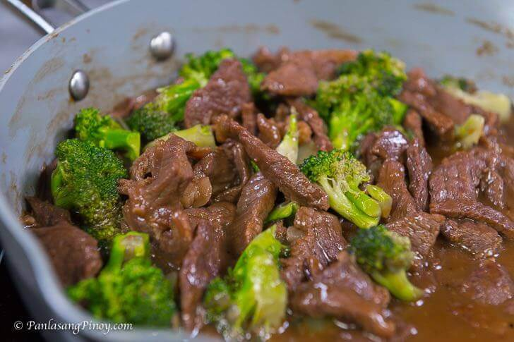

Beef Broccoli Recipes

Description
Beef Broccoli is a classic stir-fry dish made with tender slices of beef and crisp broccoli, cooked in a savory sauce of soy, garlic, and oyster sauce, offering a perfect balance of flavor and texture.
Ingredients
- Sauces and oils
- Sherry
- Sugar
- Cornstarch
- Beef
- Vegetable oil
- Ginger and Garlic
- Broccoli
Steps
- Make the marinade and marinate the beef.
- Cook the garlic and ginger oil, then cook the broccoli. Remove from the wok.
- Add the beef and marinade to the wok, then cook until the meat is no longer pink.
- Return broccoli to the wok and stir until heated through.
HOME